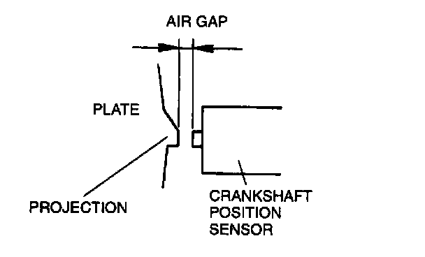
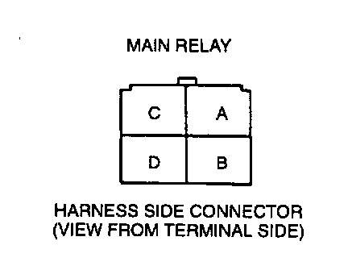
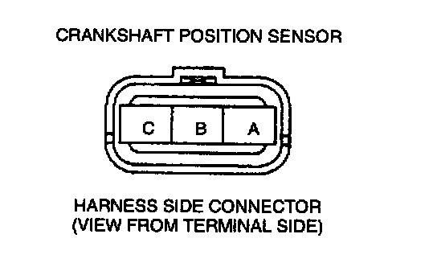

Crankshaft Position Sensor: Testing and Inspection
Inspection of Air GapNOTE:
- Perform the following test only when detected.
1. Measure the air gap between each four projections of the plate behind the crankshaft pulley and the crankshaft position sensor by using a feeler gauge. If not as specification, adjust the crankshaft position sensor air gap and inspect as follows:
- Is any of the four projections of the plate behind the crankshaft pulley twisted or bent.

Specification: 0.5-1.5 mm (0.020-0.059 in)
2. If not as specified, replace the plate behind the crankshaft pulley or crankshaft position sensor.
If crankshaft position sensor PID value is out of specification, inspect as follows:
Open circuit
- Crankshaft position circuit (Crankshaft position sensor connector terminal B and PCM connector terminal 2J.)
- Power circuit (Crankshaft position sensor connector terminal A and main relay terminal D through common connector.)


- Ground circuit (Crankshaft position sensor connector terminal C and PCM connector terminal 3C through common connector.)
Short circuit
- Crankshaft position sensor connector terminal B and PCM connector terminal 2J circuit through common connector to ground.
- Crankshaft position sensor connector terminal A and main relay terminal D through common connector to ground.
3. Reconnect the crankshaft position sensor connector.